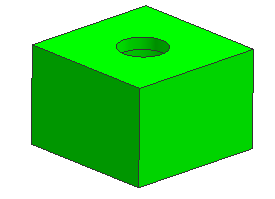

查看在英寸单位下设计的组件
-
在装配导航器中，展开 des06_mouse_assm_sub_b 节点并双击 des06_mouse_mech_elec_trans_inch。
设为工作部件信息框提示您该组件与显示部件的单位不同，因此不能成为工作部件。
-
点击确定。
-
右击 des06_mouse_mech_elec_trans_inch 并选择设为显示部件。
现在您可以编辑该组件。

-
右击 des06_mouse_mech_elec_trans_inch 并选择显示父项→des06_mouse_assm_b。
更改显示部件信息框出现，工作部件已被重置为显示部件，因为对预显示部件和工作部件不能有不同的单位，您选择的父项部件将成为显示部件与工作部件。(如果您没有看见这个信息框，那是因为您没有选中“保持”装配首选项。)

-
点击确定。